12-09-2026
Un après-midi sur la grève, une pause pour moi, une activité d'observation et de collecte de matériaux physique et numérique.
Pour un peu de contexte, je viens de la ville de Québec et beaucoup de membres de ma famille immédiate y vivent encore. Je visite assez souvent ma mère à l'Île d'Orléans et ma soeur, qui elle est maintenant à Lévis. Par manque de temps, mes visites sont assez courtes et remplies, mais une activité que je me dois de faire à chaque fois est d'aller prendre une marche sur la grève à St-Laurent-de-l'Île-d'Orléans. J'adore cet environement, et il me rapelle mon enfance.
L'été, moi et ma soeur n'aimions pas le camp de jours, donc mes parents avaient engagé une gardienne pour quelques jours de la semaine. Nous allions souvent les trois ensembles sur la grève, outillés de filet et de seaux, pour attraper des poissions dans les trous d'eau faconnés par le mouvement des marées. À la marée haute, l'eau recouvre la majorité des formations de roches sur la grève, et lorsqu'elle descent, de l'eau reste piègée dans les vallées. Ce phénomène crée des micro écosystèmes où une multitude d'organismes s'épanouie, dont des petits poissons translucide gris ou bruns.
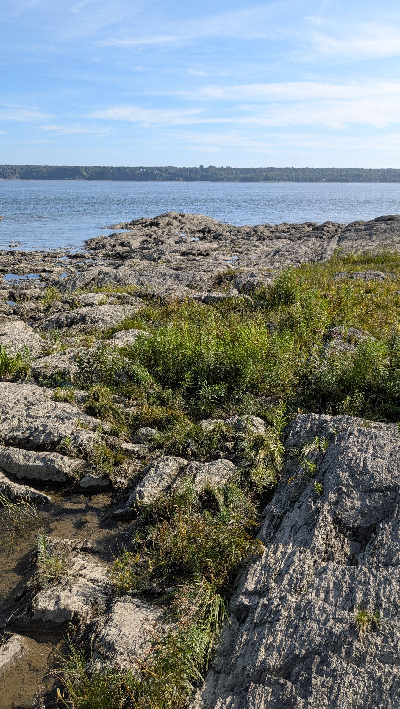

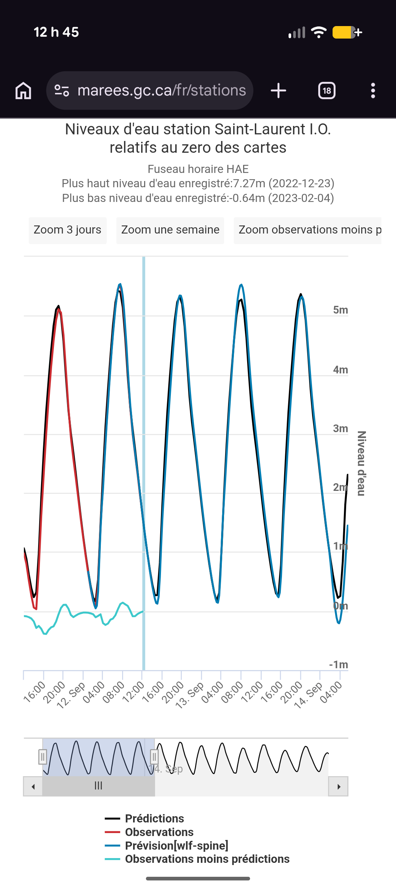
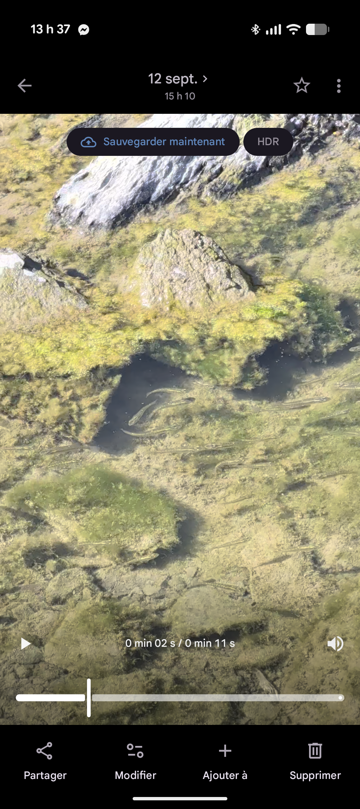
Donc, aller prendre une marche sur la grève se transforme toujours en acitivé d'observation pour moi, mais aujourd'hui, j'ai été un peu plus assidu. La question 'les poissons sont-ils encore là?', c'est transformer en, 'de quoi ont l'air les poissons, quel est leur comportement, et quels sont les autres organismes vivant dans ces flaques d'eau?'. J'ai aussi profité de l'opportunité pour faire une numérisation 3D d'un de ces trou d'eau, ainsi que des roches avoisinantes.
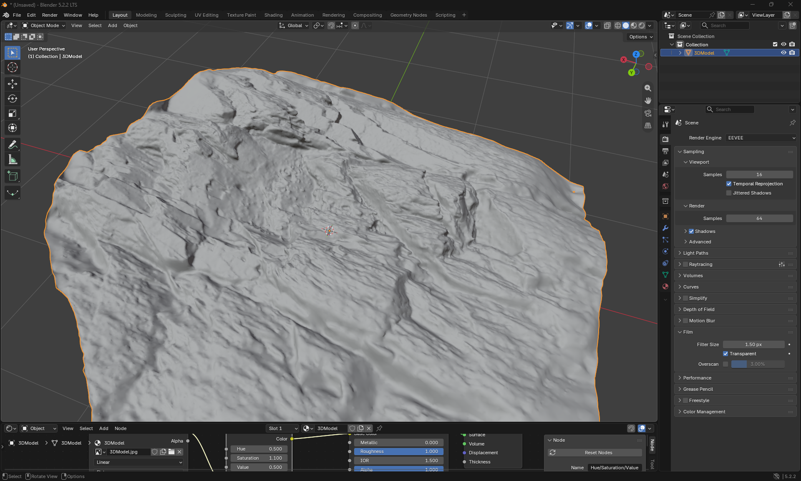
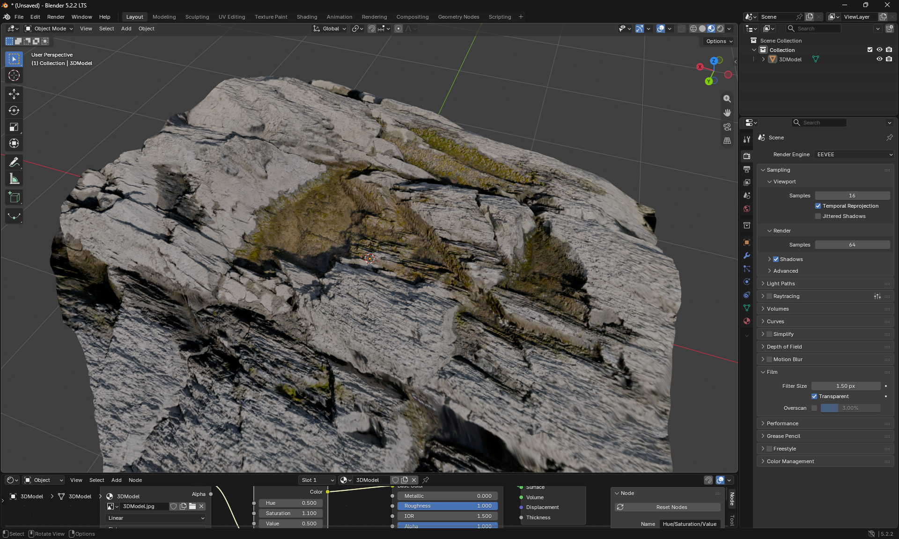
23-09-2026
Modélisation, divisions et tests d'impression
J'ai passé environ 2 grosses après-midis à diviser le scan 3D. Commes les lignes d'impressions DOIVENT aller dans le même sens pour toutes les pieces, j'ai quelques défis ici. Aussi, le volume d'impression est limité à environ 20x20x20cm, donc je ne peux et ne veux pas imprimer de toute facon en 1 seul morceau. Le désassemblage de l'oeuvre me donnera plus de flexibilité pour l'entreposage et le shipping... Je dois donc divisé, couper, séparer la roche en morceau. Cas me fait penser à une de mes oeuvre de 2023, To dissect To Stitch, ou j'ai divisé mon corps (numérisation 3d encore ici) en parties qui fesaient du sens subjectivement. J'ai pris des morceaus de tattouages. Bref pour cette roche, je crois que la division est plus technique, les choix sont moins ressentis que fait par soucis esthétique de la surface finale. En effet, plus la piece est stable, plus la surface sera jolie.
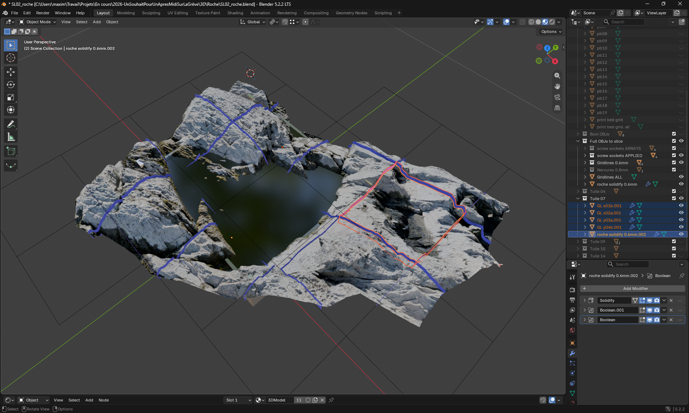
Même les machines ont besoin de 'care'... Mon imprimante mà donné beaucoup de fil a retorde, j'ai passer 3 jours à faire des ajsutements, physique (resseré des vis), au niveau du software (communication avec la machine ?) et au niveau des settings d'impressions (un peu plus vite, plus lent, plus chaud, plus de puissance du fan...).
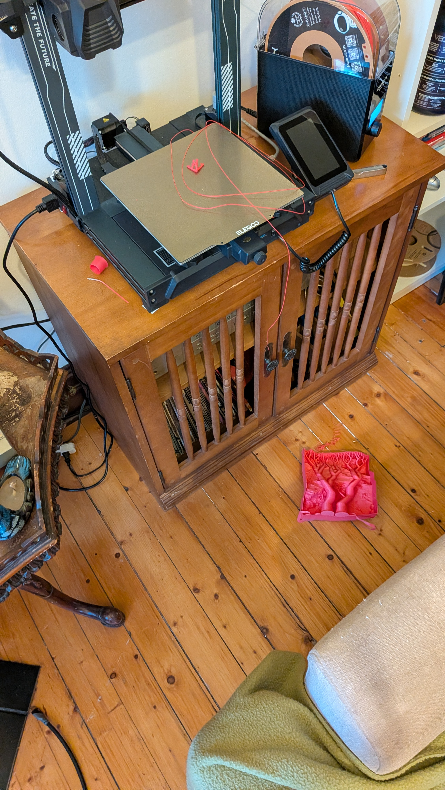
J'ai parler à Danny, et ca suggestion d'imprimer avec du PLA plutôt que du PETG fait beaucoup de sens (j'aimais la transparence du PETG, mais il y a des PLA translucide aussi ET la surface est tellement mince que bon.... la surface peut avoir une légereté et avoir des effets d'ombre et de lumière quand même... JE NE SAIS PAS ANYWAY pourquoi je voulais le rendu transparent.) --- le PLA est plus facile à imprimer, donc les ajustements non pas besoin d'etre aussi précis. Les prochaines medias sont mes premiers tests d'impression, pour déterminer l'épaisseur de la surface, les assembleges, etc. Btw Danny m'a aussi parler d'une méthode d'Asseblage toute simple avec des pinces à papiers. Plutot que de modéliser des assemblages, ajouter plein des ptites vis énervantes à placer, on peut clipper deux surfaces planes ensembles par le dessous (à tester..)
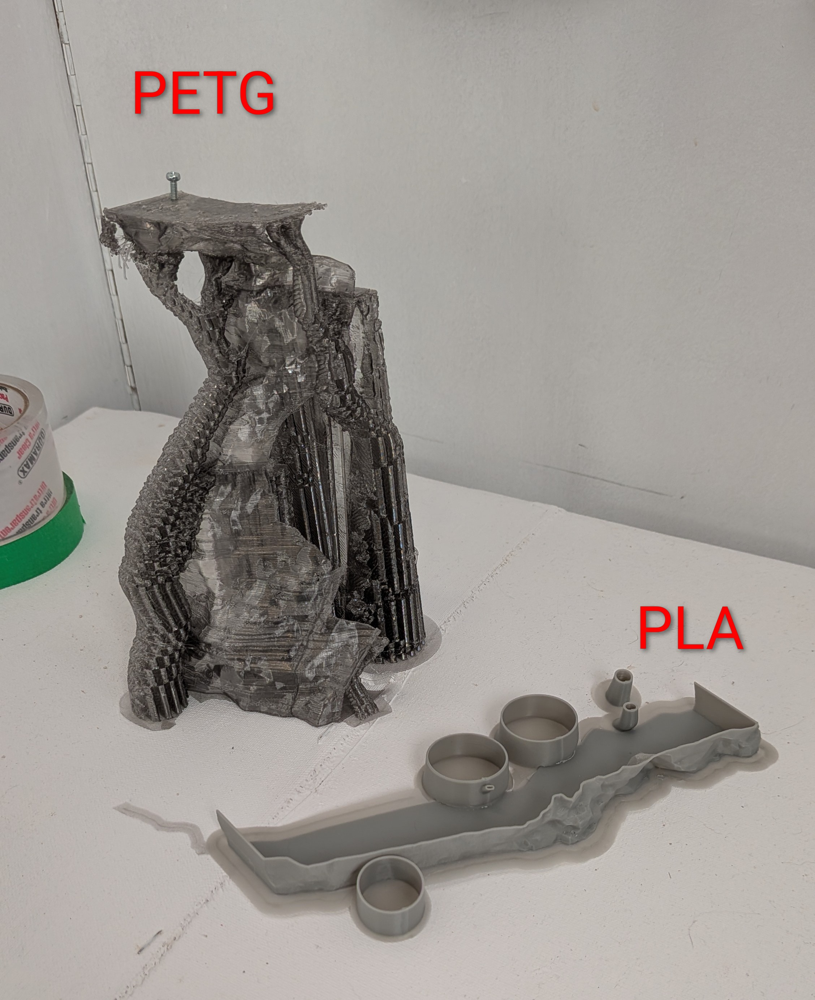
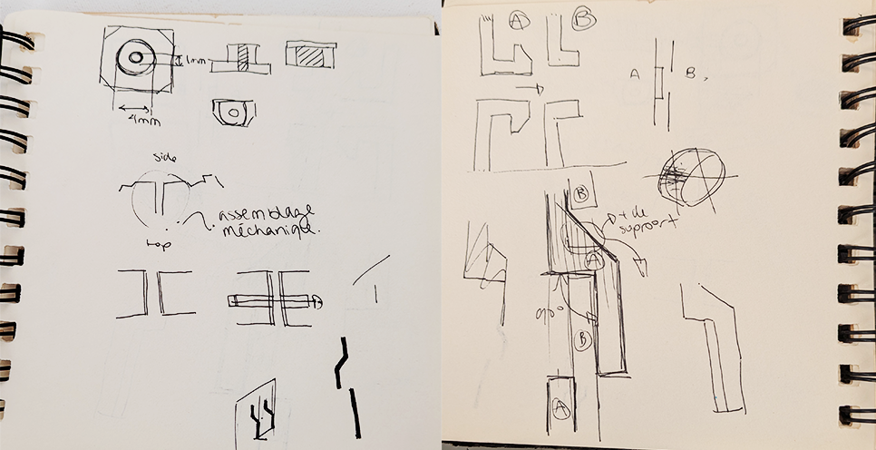
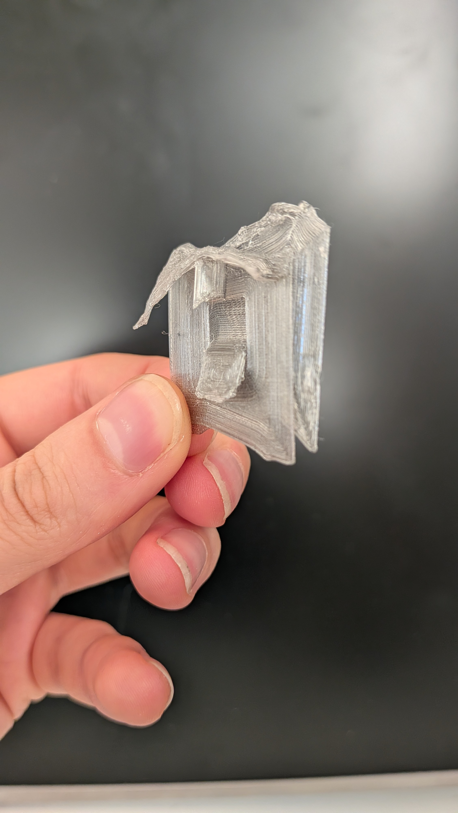
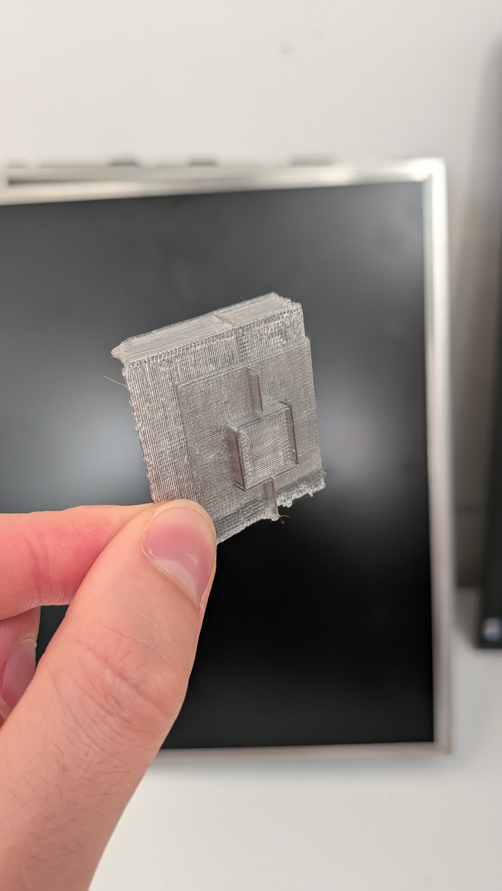
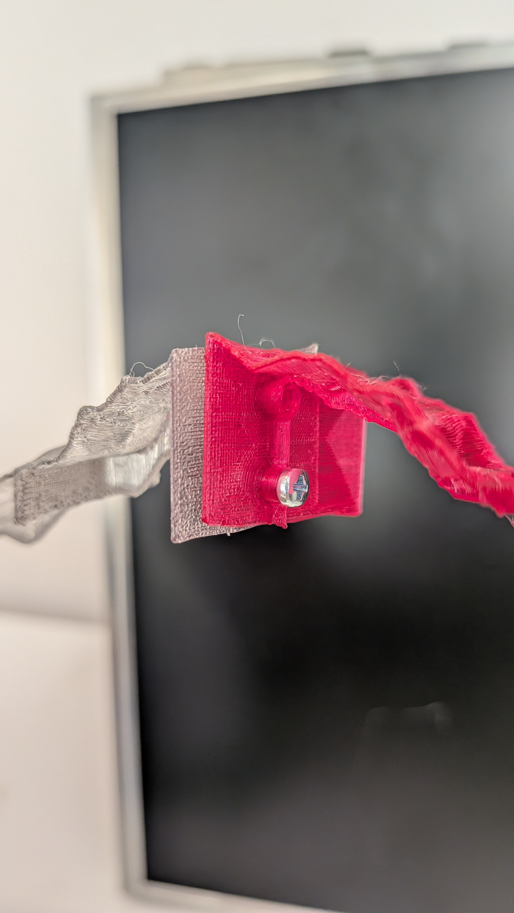
24-09-2026
Premier test kinda réussi! Et le cycle physique-virtuel
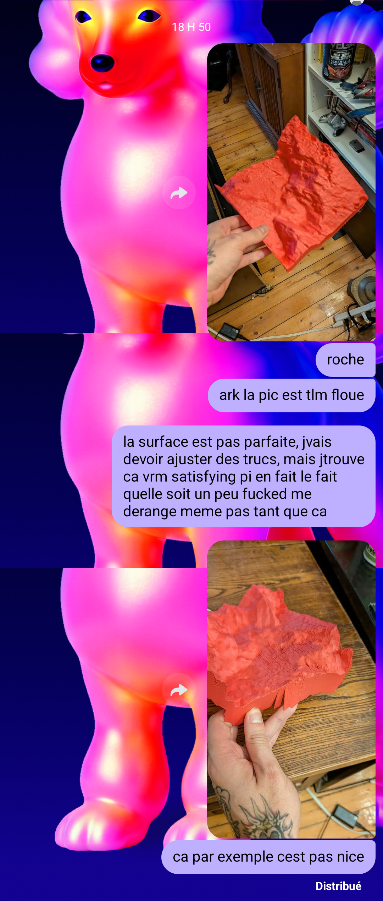
J'ai le réflexe de texter mes meilleurs amis quand je suis exité, ou quand je ressens une grosse émotion. Donc voila. Je suis hyper content de voir une des plus grosse piece imprimée en un morceau. Ce n'est pas complètement parfais (et je ne recherche pas la perfection de toute façon..), mais avec quelques ajustements ça devrait être bon! De voir l'objet prendre forme comme ca est très motivant pour moi, de le voir se matérialiser en dehors d'un écrans. Il ya comme un cycle dans ma pratique, qui passe par le physique et le numérique, ou un échange entre ces deux mondes.
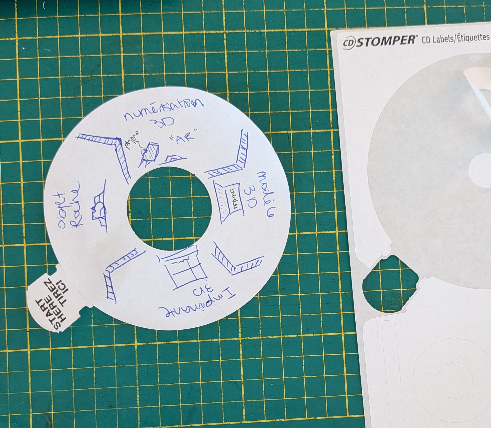
L 'idée du cycle ouvre un questionnement: qu'est-ce qui arrive si je scan l'objet imprimé en 3D? Quel est le point de Départ et le point d'Arriver du cycle, si il yen a un?
25-09-2026
Jeux de lumière
Voici quelques petits jeux de lumière effectués en atelier. La pièce grise a été imprimé sur l'imprimante de Danny (le résultat est meilleur que sur ma machine à moi!).
Lumière = Lune = Marées ???????????
25-09-2026
Tests de peinture
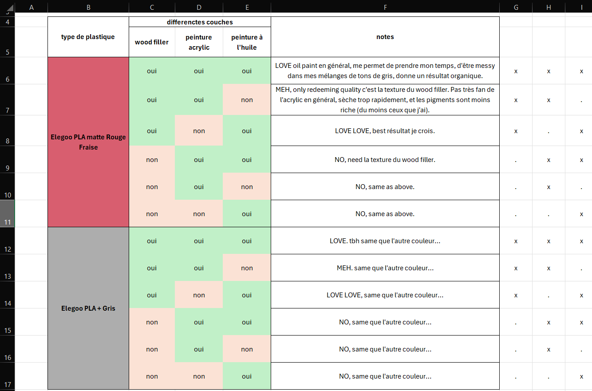
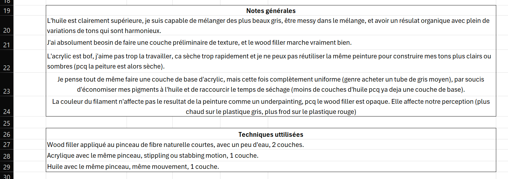
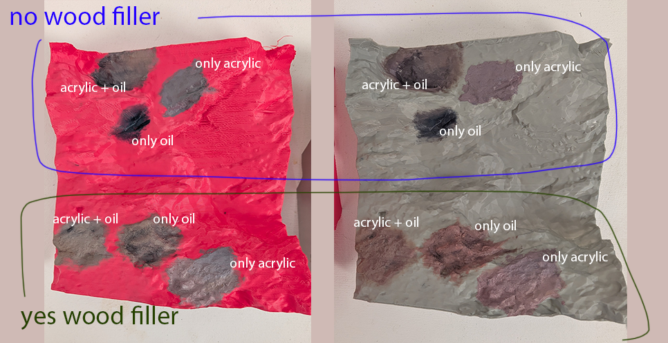
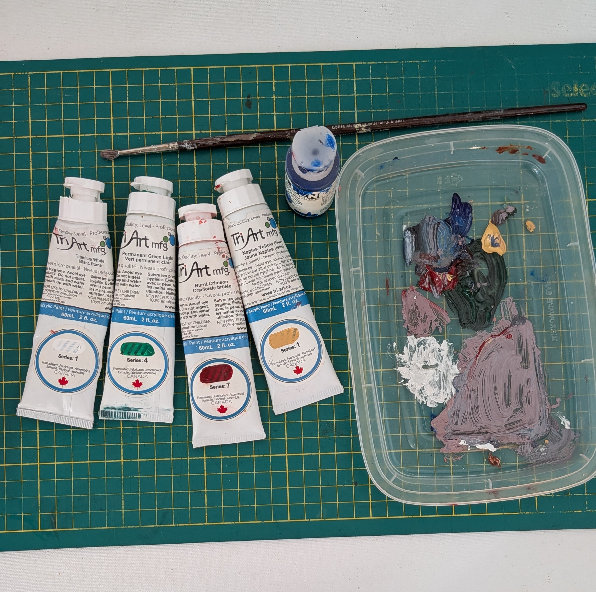
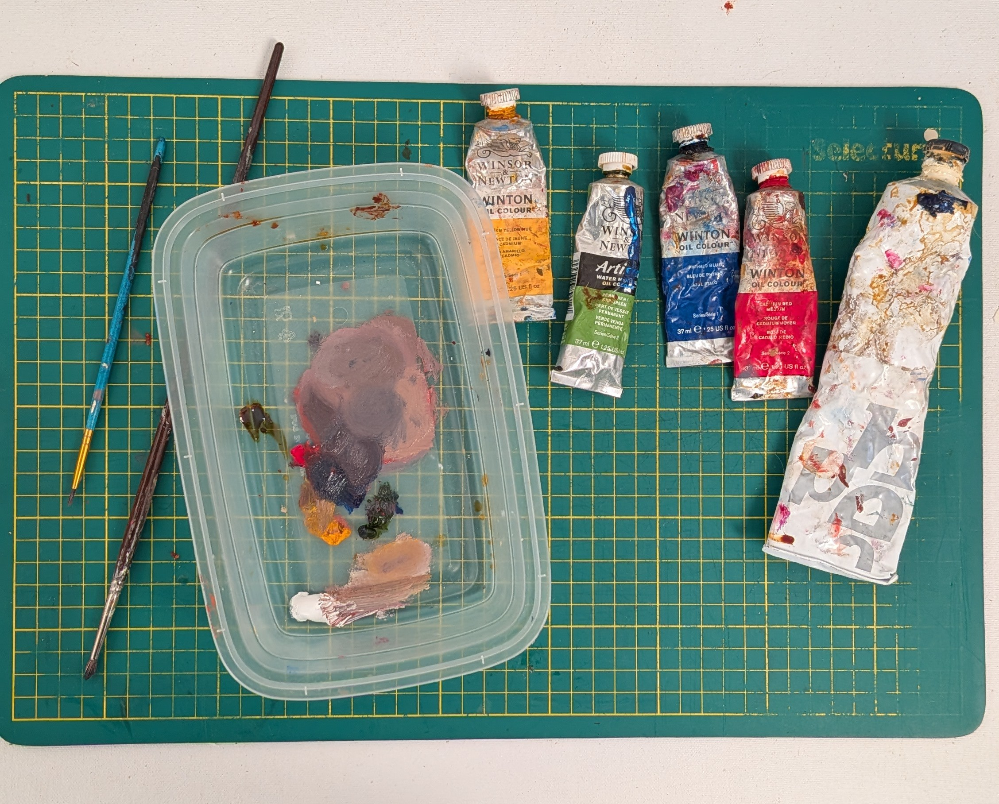
01-10-2026
Nature vs Tech
J'ai l'impression qu'on sépare souvent nature et tech, et c'est un sujet que je veux aborder dans mon travail. Pourquoi avons-nous cette pensée? Plusieurs auteurs ont aborder la question d'un point de vue très académique. Je pense ici à Donna Haraway et Suzanne Kite, deux auteures vraiment différentes, l'une est américaine et l'autre est Oglála Lakȟóta (autochtone née sur le territoire qu'on appelle maintenant Californie). Leur point de vue diffère en raison du contexte dans lequel elles écrivent.
Le symposium de la semaine dernière à révélé des sujets et des questions qui me tracasses (surtout la question de Manon sur le fait que mes oeuvres fesaient peur, étaient plutôt négatives, elle ne voudrais pas nécessairment intéragir avec la dernière machine). Pourquoi est-ce que je gravite vers des esthétiques négatives et horrifiantes? Je ne crois pas être une personne si négative que ca, même si j'ai mes moments. Aussi, je crois que pendant mes derniers travaux, je lisais beaucoup de science fiction (The Ticket That Exploded, Do Androids Dream) et je me suis laisser emporter par un défaitisme technologique qui est très présent dans ce genre de fiction et dans la culture populaire du moment.
Donc maintenant, je voudrais être plus positif (ce n'est pas le bon mot. je veux garder la nuance, aller vers un affect plus nuancé, être dans un mystère merveilleux? or something like that.). Pour mon projet en ce moment, je pensais faire une base en métal. Pourquoi? Pas sur. J'aime l'esthétique industrielle, elle fit bien avec la technologie, mais elle peux parfois avoir lair froide. En m'en venant en vélo aujourdh'ui, j'ai vu des branches sur le bord du canal Lachine. J'en ai prise quelques une, et je me suis mi au travail pour faire un mockup de se que pourrait être une structure hybride entre matériau industriel (bois coupé, ou extrusion d'aluminium T20) et matériau naturel (branches d'érable ou chênes?). Je dois dire que de voir cet assortiment me rend heureux. Je crois que la forme dois être travaillée encore. Je trouves ca un peu random d'utiliser tout a coups des matériaux naturels... tout le reste dans l'installation est synthétique...
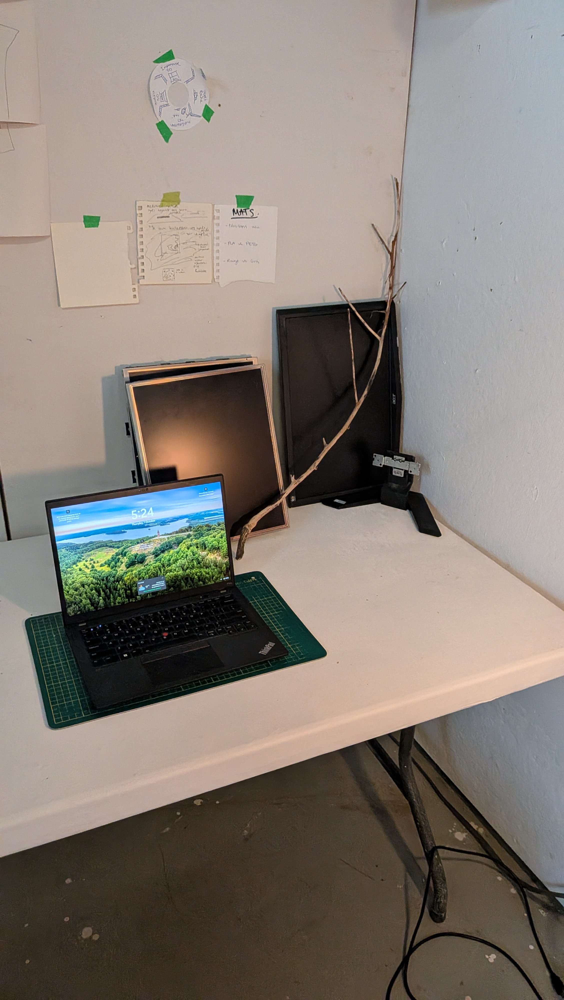
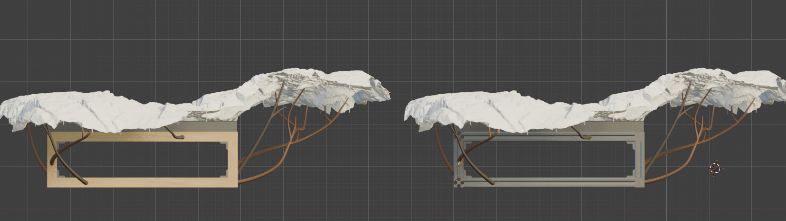
02-10-2026
Nature vs Tech, version physique
Et voici des tests avec du vrai bois (pin recyclé) et des coquillages (moules bleues récolté sur le liue physique, sur la grève de St-Laurent). J'ai aussi mis un vidéo de poissons qui nagent dans un de ces trous d'eau, sur l'écran, capturé avec la caméra de mon téléphone. Je crois que de penser au média numérique montré sur l'écran va m'aider à décider au niveau de la forme et des matériaux de l'installation. Ce vidéo est vraiment pas ce que j'avais en tête au départ, mais peut-être que si je filmais de facon plus stable et intentionelle, et que je 'color grade-ais' ce pourrait être une bonne option. Sinon, je croyais recréer des éléments de ces écosystème en 3D, et les assembler dans un nouveau monde un peu plus whimsical. OU un mix des deux? le virtuel et le vidéographié (les deux pointent au monde physique de facon plus ou moins directe)
Petit test d'installation bonus: pièce en plastique suspendue à une branche avec du fil de pèche (meh).
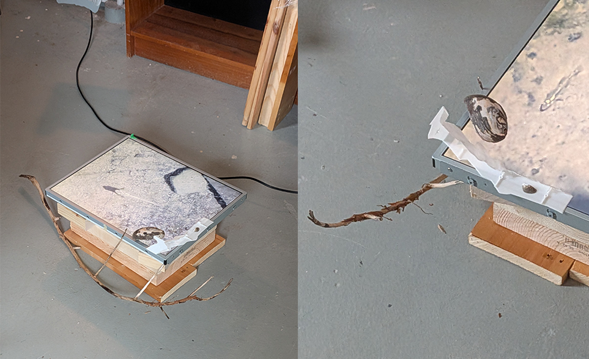
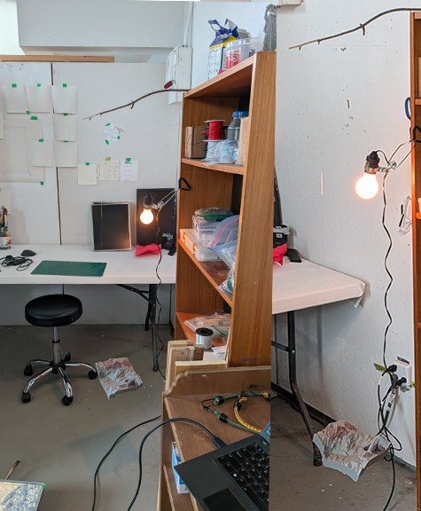
02-10-2026
Ho Tzu Nyen - new ref just dropped
Mélissa, ma voisine d'atelier, m'a partager un artiste qui a fait une exposition au Bozar à Brussel cet été, après lui avoir montrer le vidéo du poisson. J'aime beacoup son usage de l'écran. Dans `P For Power`, (2026) [kiangmalingue.com/ho-tzu-nyen-bozar/], on vois un assortiment d'écrans de tailles différente, et je m'imagine devoir m'approcher des plus petits, me reculer pour voir les plus grand, me pencher pour voir ceux près du sol, en fait bouger dans cet espace. J'aime la sculpture et l'installation en tant que visiteur parce que j'ai ce mbesoin de bouger, d'observer et de découvrir des trucs cachés sous différents angles.
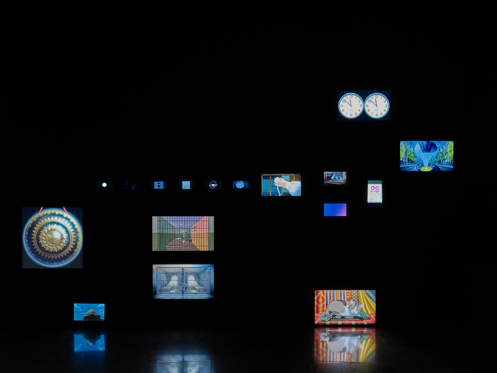
Dans son installation `T for Time` (2023-ongoing) [kiangmalingue.com/ho-tzu-nyen-bozar/], on vois un écran avec un vidéo numérique, et un deuxième avec un média numérique qui agit comme un voile devant le premier. Il y a donc un effet de couches, de double exposition. Le rapport entre le physique et le numérique est évident. Mon idée que j'ai eu hier, sois de combiner physique et virtuel avec deux médias numériques, le vidéo et l'animation 3D, est conceptuellement similaire à cet installation. J'aime aussi la narration poétique qui accompagne ce vidéo.
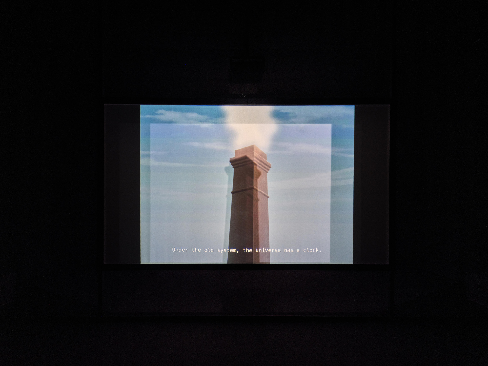
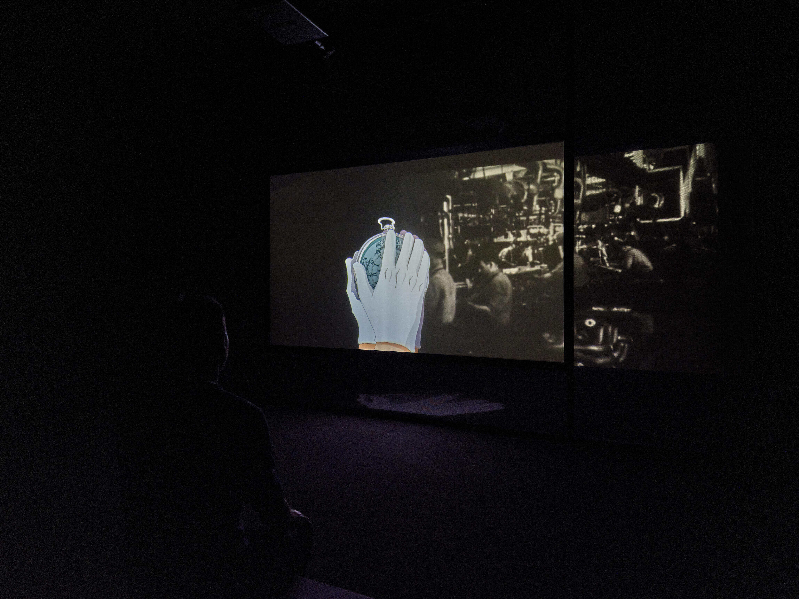
10-10-2026
Une autre marche sur la grève, et collecte de footage
Cette fin de semaine, je suis retourné chez ma mère pour l'aider à rammasser les feuilles sur son terrain et à tailler sa haie. J'ai sauter sur cette occasion pour emprunter une caméra et prendre quelques vidéos sur la grève, dans l'optique de faire quelques expériences de montage. Banlancer cette grosse caméra qui vaut très chère au dessus d'une flaque d'eau sur un terrain rocailleux, alors que la marée montait doucement, était une expérience un peu stressante. Par contre, les images capturées sont vraiment belle, et je suis un peu shook de la qualité. J'apprécie aussi le son du vent et des vagues, mais on entend parfois ma mère parler au téléphone dans le fond (lol).
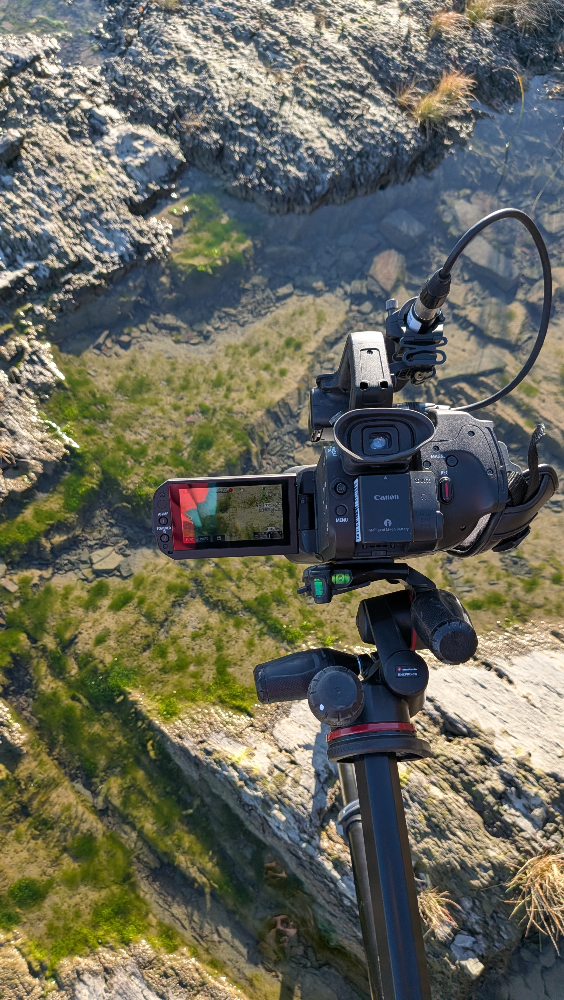
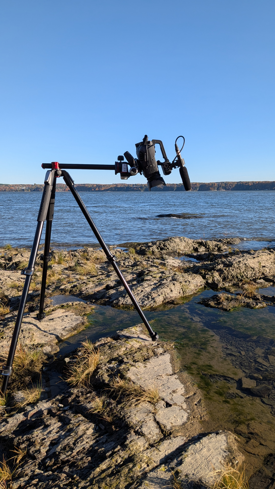
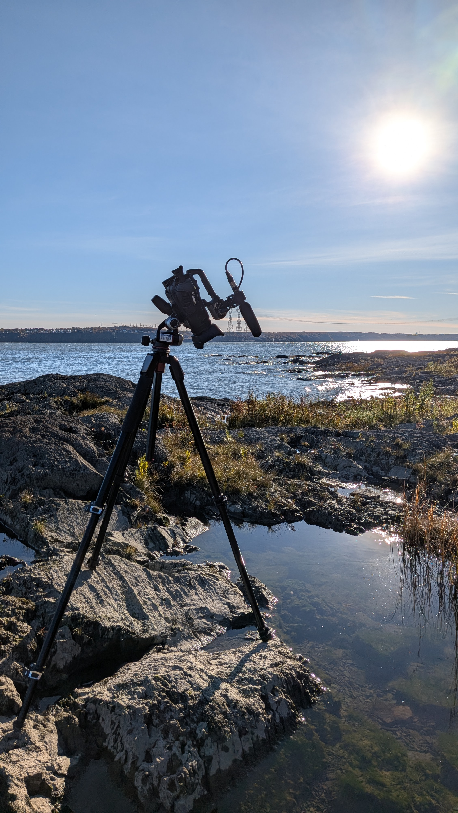
Voici quelques stills qui provient des vidéos que j'ai pris. J'ai essayer quelques types de prises de vues. J'aime beaucoup lorsque la caméra est en movement (par l'intermédiaire de mon corps en movement).
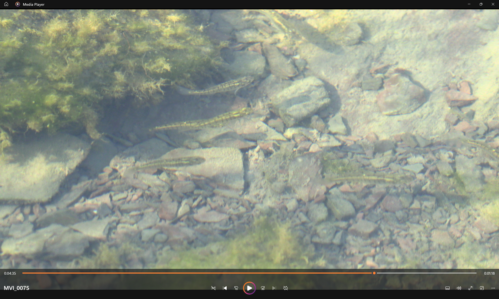
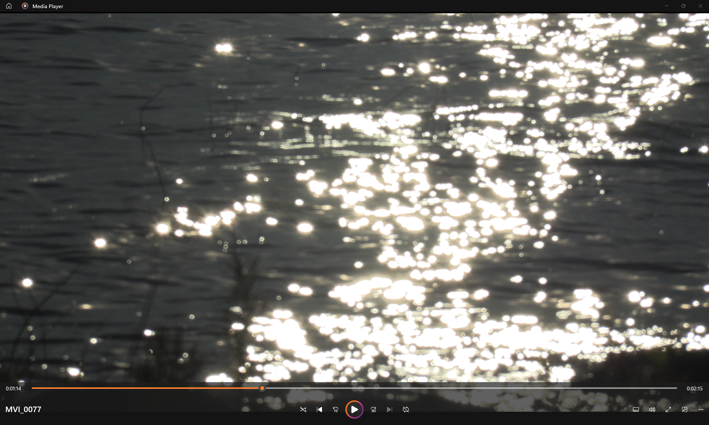
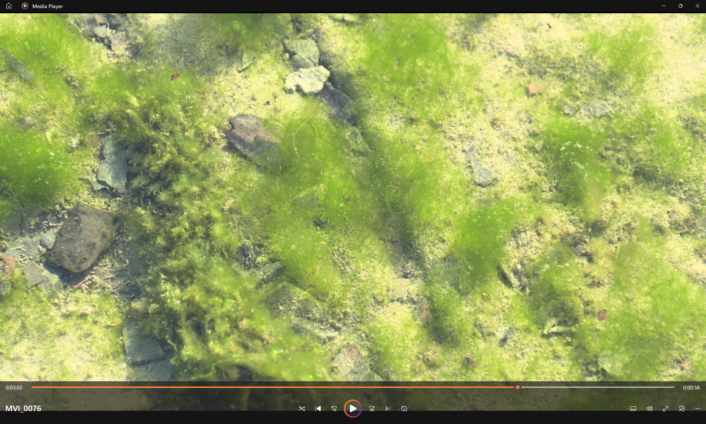
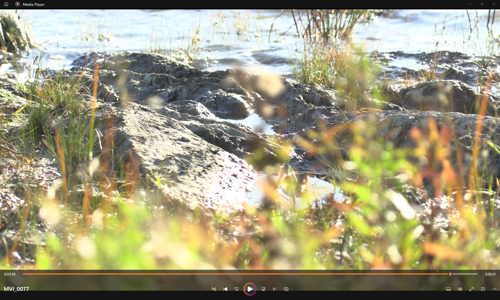
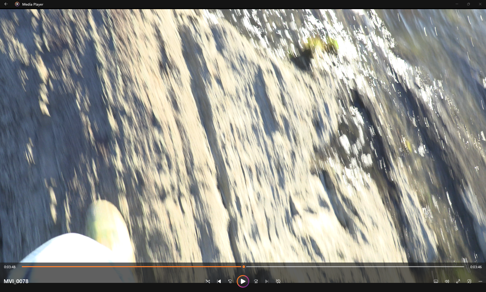
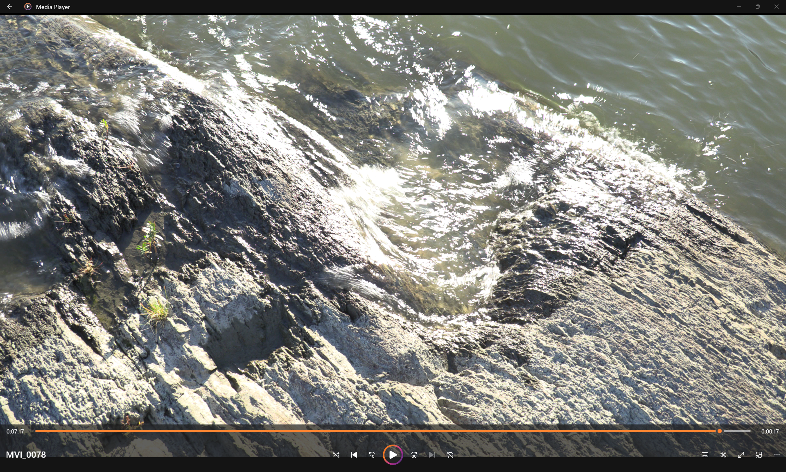
J'ai aussi ramené quelques branches mortes en même temps. Mon doute par rapport aux branches, c'est que ça ne fais pas vraiment de sense qu'elles soient en dessous de la surface de la 'roche', mais en même temps je ne sais pas si c'est important. Ca pourrait quand même être intéressant et ajouter un aspect surréaliste à l'installation. Je pensais ausi à récolter des pierres pour soutenir l'écran et-ou la surface en plastique, on en trouve des fragments facilement sur la grève, quoiqu'ils soient de petite taille généralement.
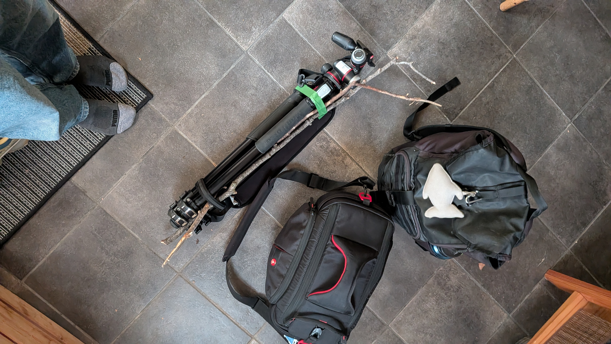
13-10-2026
Manipulations Vidéo
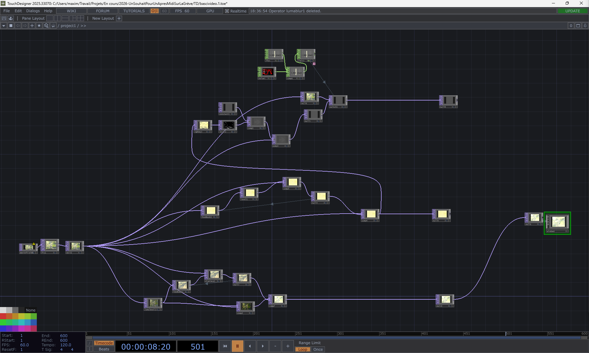
Quelques tests sur TouchDesigner pour ajouter des effets visuel au vidéo... Je dois répondre à la question suivante: Pourquoi est-ce que je veux désintégrer l'image? Cette question s'applique aussi à la surface de plastique de la roche. Pourquoi peindre certaines parties et laisser d'autres non-peinte? J'aime généralement laisser des artéfacts de mon processus de production dans l'oeuvre finale. J'aime une oeuvre qui semble semi achevée, mais pourquoi? Peut-être que j'aime la possibilité que le glitch laisse (oui je suis en train de relire LEgacy Russel...). Ou simplement j'aime laisser des indices sur le processus parce qu'en tant que consommateur d'art et artiste, j'aime comprendre les techniques utilisées... Bref, je n'ai pas la réponse à cette question ce soir, mais ce serait peut-etre biend de creuser.
14-10-2026
Discussion avec Élyse, test d'assemblage avec plus de branches
Suite à une discussion avec Élyse de l'Atelier de métal, je voulais revoir l'écran avec les branches qui sorte de la base pour venir soutenir la surface de plastique. Je me rend compte maintenent que je dois prendre des décisions pour pouvoir arriver à finir ce projet avant la fin de la session. 1. la couleur de la surface de plastique: gris, parce que c'est la couleur la plus près de la roche. le contraste entre la surface non-recouverte et les partie recouverte est un peu moins intense qu'Avec le plastique rouge ou blanc, mais en fait ca fait que la transition entre les deux type de surfaces est plus douce. Le gris est aussi très harmonieux avec le métal. Et il est aussi très unatural, ce que j'aime puisque je veux jouer avec le caratère naturel-fabriqué. Je ne suis pas encore convaincu des branches honnetement. Je pourrais aussi courber des tiges en métal... Je crois que cette décision peu attendre, et je crois que d'imprimer plus de pièces de la surface en plsatique va m'aider à la prendre.
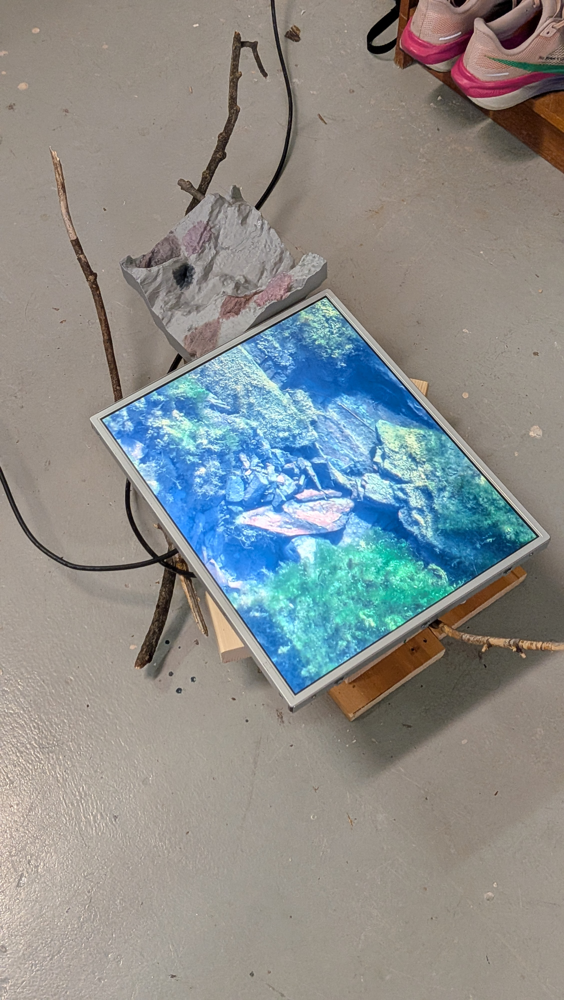
Je suis allé parler à Élyse pour aider à la conception de la base en métal. Je crois que je penche vers le métal pour cet objet parce que c'est un matériel évidemment industriel et transformé, mais c'est aussi un minéral qui provient du territoire. L'acier est miné au Caanda, c'est une inustrie vraiment néfaste pour l'environnement. Je ne sais pas exactement comment je me sens d'utiliser des matériaux qui sont associé à la dégradationd e l'environnement, comme le plastique et le métal. Mon processus de création m'amène vers ces matières... et en même temps je crois que l'impact environmental que j'ai personnelement est plutot bas. En utilisant ces matériaux je pointe vers le problème en faisant parti du problème? est-ce possible de ne pas faire parti du problème du tout? Elle m'a conseillé de tout soudé en une pièce, mais je crois que je vais vouloir me compliquer la vie (comme d'habitude), et concevoir cette structure avec des assemblages démontables. Donc, boulons et écrous. Je me rend compte que l'assemblage et le désassemblage est une charactéristique clée de mon travail. Toutes mes installations précédentes sont démontables. En fait j'aime penser à ces assemblages, et au niveau pratique c'est beaucoup plus facile pour le storage et la diffusion de l'oeuvre. Ce genre d'assemblages a aussi un aspect industriel, les boulons et les pieces de quincailleries... et au niveau théorique je crois que je compte à parler d'assemblage au niveau de l'installation parce qu'il y a plein de liens possible. Genre la réunion de deux choses ou plus au niveau relationel, l'hybridité du post-humain ou cyborg, l'identité frankenstein de Judith Butler, le glitch cosmic au niveau identitaire de Russel... Bref, je vais devoir faire plus de modélisation et de tests d'assemblages.
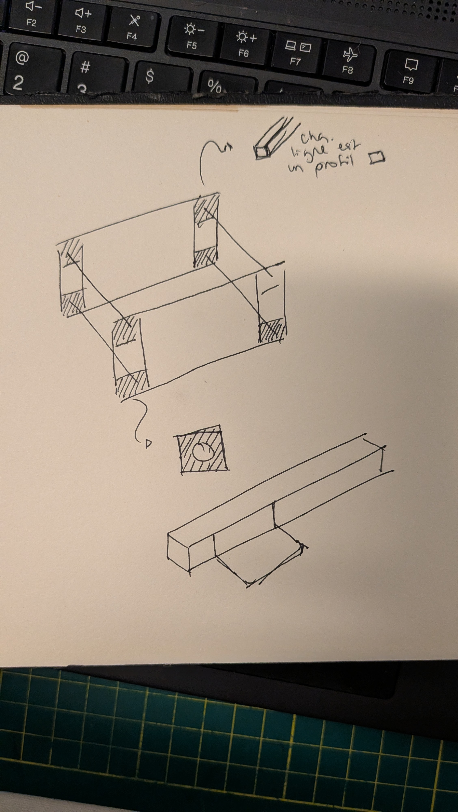
15-10-2026
Mockup de la structure en acier
Je me rend compte que les cours de séminaire me fatigue beaucoup. Les discussions sont parfois lourdes, surtout dans le cours d'Alexandre sur l'art et le numérique. On fini toujours par parler de AI, hier on a même parlé de subcultures violentes genre les incels.. En plus la discussion est parti de Glitch Feminism, qui pour moi est un texte clé, énormément inspirant et positif... je me demande pourquoi les discussions tournent toujours négativement dans ce cours. Et dans le cours de méthodologie, on parles beacuoup, c'est intéerssant mais légèrement épuisant parfois.
Le travail en atelier est pour moi un échappatoire. Je me sens productif mais sans m'exténuer mentalement. Aujourd'hui, j'ai décidé de modéliser une structure en acier, avec les dimensions des tiges et des cornières qui sont disponibles dans l'atelier de métal ici. Pour moi c'est hyper important de visualiser ce genre d'objet, avec tous les assemblages. J'aime beaucoup le look de l'objet que j'ai modéliser, et demain je vais aller voir Élise pour lui demander son opinion sur la faisabilité et la solidité de mes assemblages que j'ai choisi (cornieres et boulons).
Je dois encore penser et dessiner la facon dont la surface de plastique reposera sur la base et l'écran. J'ai l'impression de répeter ça dans chaque entrée, mais je ne suis pas sur que les branches soit la solution. J'aime que ca soit un peu weird et surprenant comme objet structurel, j'aime que ce soit un materiel naturel, et j'aime que ca soit une structure hybride entre métal et bois. Je n'aime pas que ce soit des objets qui semble fragile, et je me demande si je ne ferais pas mieux d'utiliser que des materiaux industriels ou transformés.
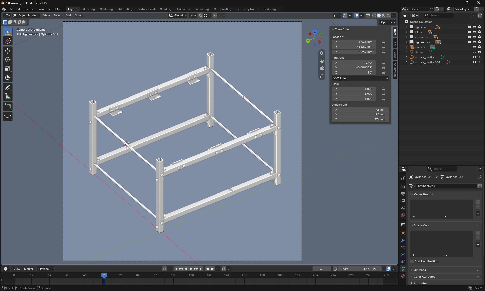
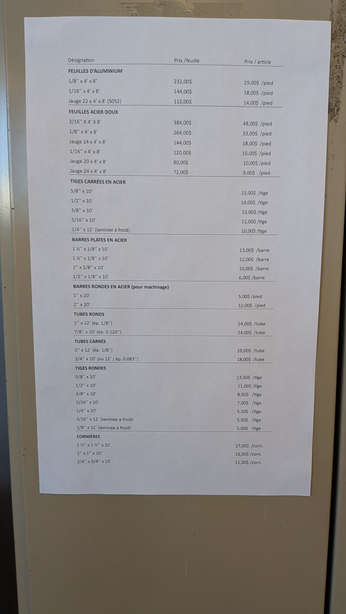
16-10-2026
Réflexion sur la structure en métal et la technologie
Je me lance dans un enregistrement audio. Mon téléphone m'offre aussi une transcription texte, on verra si ça sort bien. En fait ce matin je suis allé chercher un lecteur dvd qu'une personne donnais sur FB marketplace. Je vais pouvoir l'utiliser dans mon installation pour faire jouer un vidéo sur l'écran, et en plus c'est un objet qui aurait probablement été aux poubelles. J'adore récupérer les appareils électronique usagé et leur donner une seconde vie dans mes installation parce que 1. c'Est moins cher que d'acheter toujours des appareils, 2. cest mieux pour l'envirionnement, et 3. ca combat l'obsolescence programmé directement (ces objets ont une utilité pour moi en arts, mais pour le monde, au quotidien, c'est désuet et intuile...).
Bref, en marchant vers le domicile de la personne, je pensais à ma structure, et j'essayais de me trouver des raisons pour la construire en acier plutot qu'en extrusions d'aluminium. Je met les enregistrement audio ci-dessous, et ensuite les transcriptions.
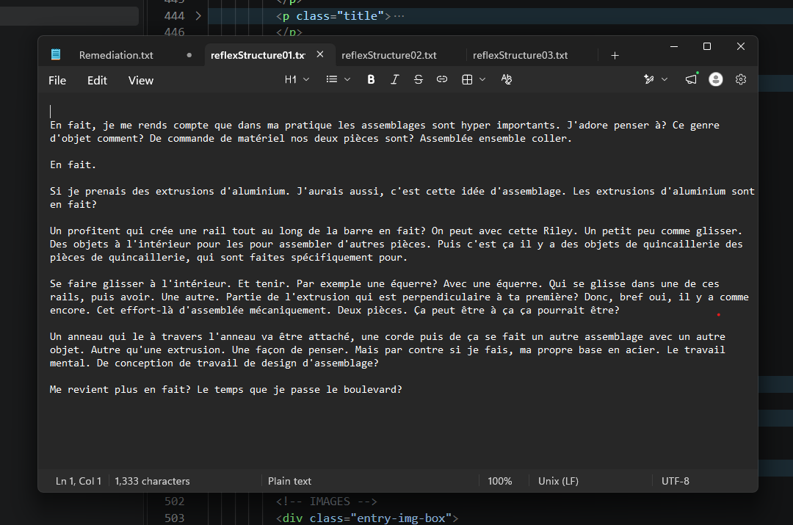
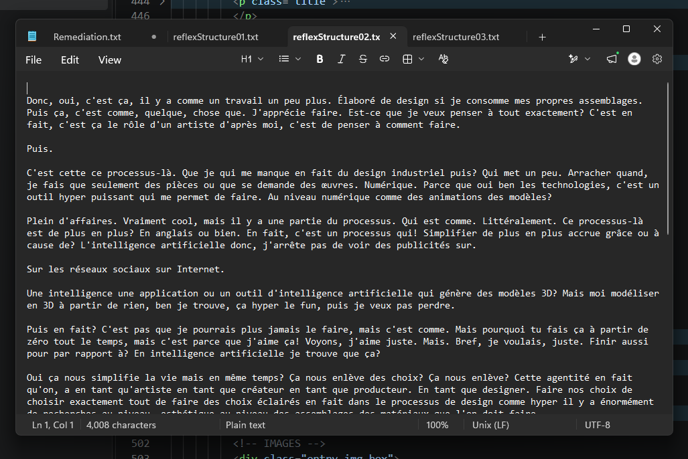
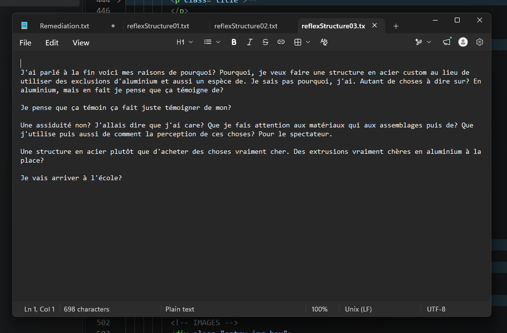
17-10-2026
Concept de remédiation
Lors de l'exercice de la cartographie, Dominic m'a mentionner le concept de la remédiation. Je l'ai explorer vraiment rapidement, mais je crois qu'il y a du potentiel au niveau théorique pour justifier mon processus -physique-virtuel-.
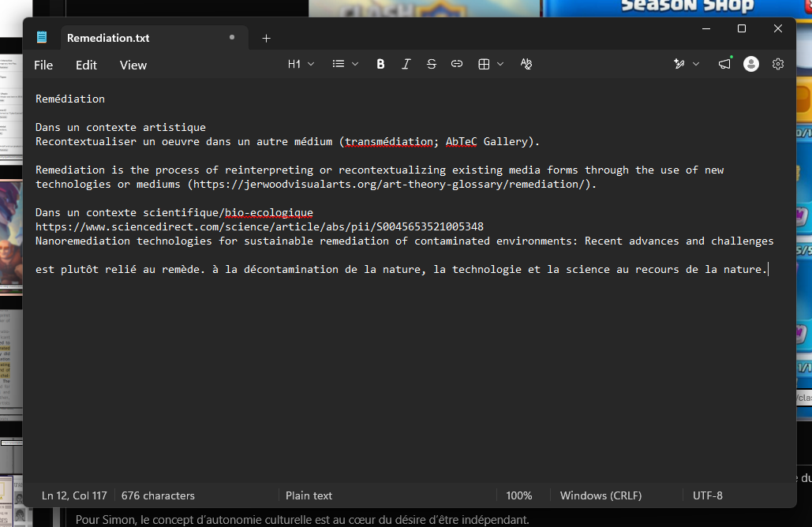
19-10-2026
Vrai ou Faux
Une autre réflexion sur la thématique du vrai et du faux..
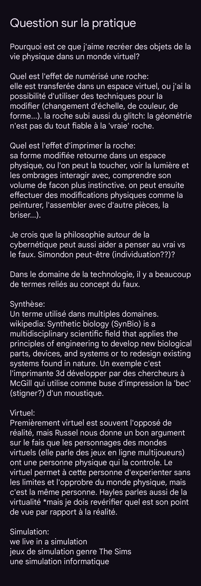
20-10-2026
Rencontre avec Dominic pour la direction de recherche
quelques notes prise durant et après la rencontre. Un peu désorganisé commes notes mais c'est mieux que rien. Plusieurs thèemes, concepts, auteurs, et techniques à explorer dans les prochaines semaines.
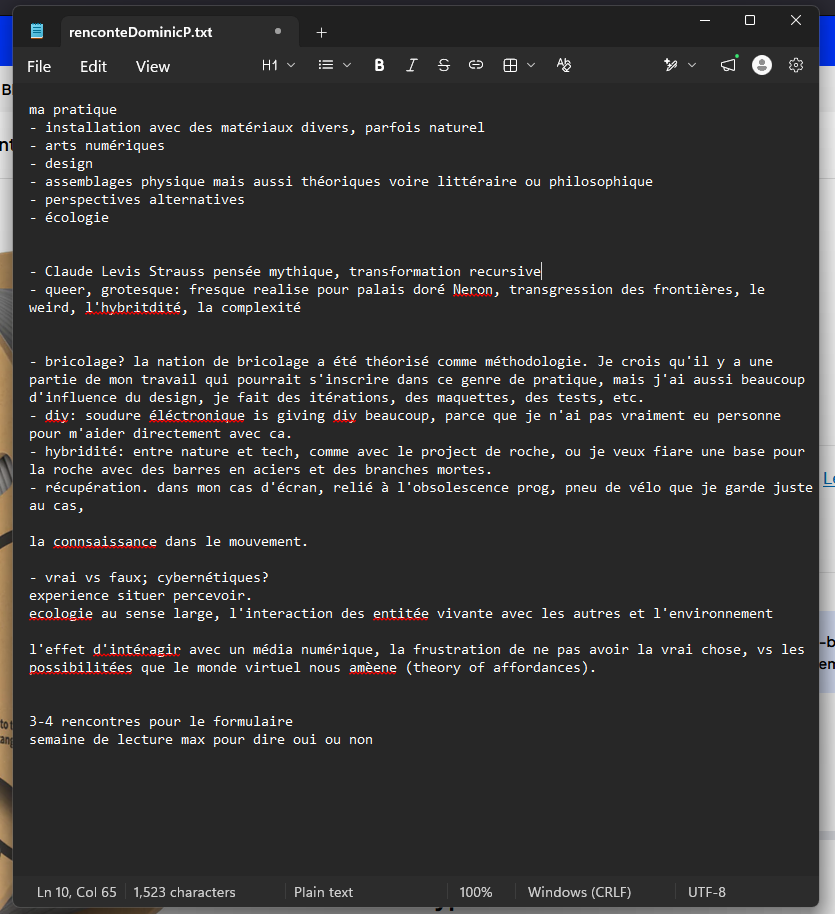
22-10-2026
Rencontre avec Alexandre pour la direction de recherche
quelques notes prise durant et après la rencontre. Un peu désorganisé commes notes mais c'est mieux que rien. Plusieurs thèmes, concepts, auteurs, et techniques à explorer dans les prochaines semaines.
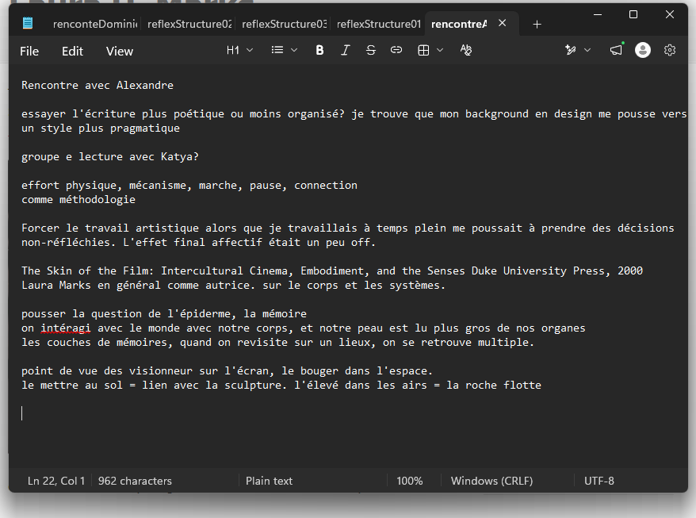
Je ne suis pas encore sûr à 100% de qui choisir..........,,,,,,,,,,, je me suis donné la fin de semaine pour y penser.